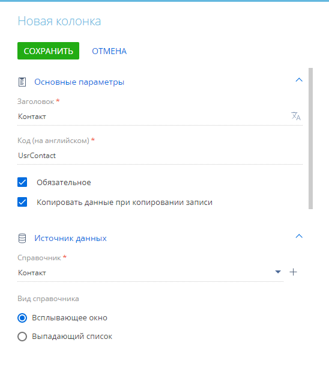
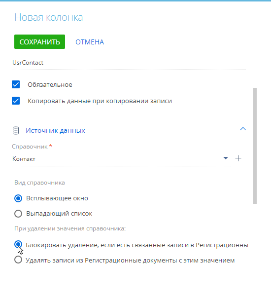

Деталь — это элемент страницы, на котором представлены записи объекта, связанного с текущей записью. Детали используются, когда на странице записи необходимо отобразить данные из другой сущности, которые связаны с текущей записью. Например, все знаменательные события контакта или адреса контрагента. Большинство деталей имеют собственный реестр. На детали отображаются только те записи, которые связаны с текущей записью раздела. Обычно связь устанавливается по справочной колонке детали, в которой используется объект страницы записи (чаще всего это объект раздела). Детали с полями редактирования или нестандартными данными, например, Файлы и ссылки, а также детали, данные которых не имеют прямой связи с текущей записью, создаются только средствами разработки. Подробнее читайте в документации по разработке, статья Деталь.
Например, на детали Участники активности представлен список участников текущей активности. А на детали Активности представлен список активностей, связанных с текущим контактом (Рис. 1), контрагентом и т. д.
Вы можете создать деталь непосредственно в мастере разделов при настройке страницы или воспользоваться мастером деталей. Детали, созданные в мастере разделов, будут сразу добавлены на страницу раздела. Детали, созданные в мастере деталей, после сохранения необходимо будет добавить на страницу раздела. Подробнее: Настроить существующую деталь на странице записи.
Деталь может быть создана:
- На основании существующего объекта системы. Например, после добавления нового пользовательского раздела вы можете отобразить его данные в виде детали в других разделах системы. Также этой возможностью можно воспользоваться, когда вам нужно использовать на страницах разделов детали, созданные на основании одного объекта, но отличные по свойствам. Подробнее >>>
- На основании нового объекта системы. Например, в пользовательском разделе Заявки для заявок от сотрудников на оформление больничного можно отобразить перечень медицинских документов. Эта возможность используется в случаях, когда в приложении еще не создан объект, данные которого вы планируете отобразить на странице. Подробнее >>>
Все объекты и схемы, которые создаются в результате работы в мастере разделов и мастере деталей, привязываются к определенному пакету. Если вы планируете перенос изменений между средами, то перед началом работы создайте пользовательский пакет и настройте сохранение изменений в этот пакет. Подробнее читайте в документации по разработке, статья С чего начать.
Создать деталь на основании существующего объекта
Для создания детали могут быть использованы разделы приложения или справочники. Чтобы созданные вами изменения впоследствии можно было корректно перенести в другую среду, перед началом настройки необходимо проверить привязки пакетов:
- Если вы создаете деталь на основании пользовательского объекта, убедитесь, что ваши текущие изменения сохраняются в том же пакете или в зависимом от него.
- Если вы создаете деталь на основании базового объекта, убедитесь, что пакете, в котором сохраняются ваши изменения, настроена зависимость от пакета, в котором сохранен базовый объект (обычно это пакет Base или пакет с функциональностью продукта, например, “SalesEnterprise”).
Подробнее о пакетах читайте в документации по разработке, статья Общие принципы работы с пакетами.
Для решения данной задачи в приложении был предварительно создан пользовательский раздел Заявки, объект которого будет использован для создания детали. Как добавить пользовательский раздел в систему, описано в статье Добавить новый раздел.
- Откройте нужный раздел, например, раздел Контакты.
- Кликните Вид —> Открыть мастер раздела.
- В блоке Страницы раздела мастера разделов:
- Кликните Редактировать страницу, если в разделе настроена только одна страница.
- Кликните по ссылке на соответствующую страницу, если в разделе настроено несколько страниц редактирования.
- Перейдите на вкладку, где должна располагаться деталь.
- Нажмите кнопку Добавить деталь.
- В окне настройки детали справа от поля Деталь нажмите кнопку .
- В появившемся меню выберите Добавить по существующему объекту (Рис. 2).
Рис. 2 — Создание детали по существующему объекту
- В открывшемся окне (Рис. 3):
- Укажите объект, на основании которого будет создана деталь. В нашем примере это “Заявки” .
- Укажите заголовок детали, по которому ее будет легко найти в перечне объектов. В нашем примере это “Заявки контакта”.
- При необходимости добавьте переводы заголовка. Подробнее о переводах читайте в статье: Добавить переводы новых элементов интерфейса.
- Если вы хотите, чтобы данные на детали можно было редактировать непосредственно в строке реестра, не переходя на отдельную страницу, то установите признак Сделать реестр редактируемым.
- Нажмите Сохранить.
Рис. 3 — Пример настройки детали в мастере разделов на основании существующего объекта
- В окне настройки детали в блоке Какие записи показать на странице? настройте правила отображения записей раздела Заявки на новой детали:
- В поле У которых колонка детали укажите колонку объекта детали, по значению которой приложение будет определять, отображать ли запись на странице. В нашем примере это колонка “Создал”.
- В поле Равна колонке страницы укажите колонку страницы текущего раздела, значение которой необходимо сравнить со значением ранее заполненного поля У которых колонка детали. В нашем примере это колонка “Id”.
В результате на странице контакта отобразятся только те записи раздела Заявки, у которых в поле Создал указан этот контакт.
- Нажмите Сохранить.
- Сохраните изменения в мастере разделов.
В результате в приложении будут созданы схема и страница детали. Новая деталь будет зарегистрирована и добавлена на страницу записи. Страница редактирования детали идентична странице пользовательского раздела Заявки. Все изменения, которые вы внесете на страницу детали отобразятся также на странице раздела. В пакете, в котором сохраняются изменения, появятся схема (клиентский модуль) и данные новой детали, а также обновленные объект, схема и страница редактирования раздела Контакты.
Этот пример также может быть реализован в мастере деталей. В результате в системе будет зарегистрирована деталь, которая отобразится в перечне деталей в мастере разделов и будет доступна для добавления на страницы разделов. Подробнее: Создать деталь для последующего добавления на страницу записи. В пакете, в котором сохраняются изменения, появятся схема (клиентский модуль) и данные новой детали.
Создать деталь на основании нового объекта
- Откройте нужный раздел, например, раздел Заявки.
- Кликните Вид —> Открыть мастер раздела.
- В блоке Страницы раздела мастера разделов:
- Кликните Редактировать страницу, если в разделе настроена только одна страница.
- Кликните по ссылке на соответствующую страницу, если в разделе настроено несколько страниц редактирования.
- Перейдите на вкладку, где должна располагаться деталь.
- Нажмите кнопку Добавить деталь.
- В окне настройки детали справа от поля Деталь нажмите кнопку .
- В появившемся меню выберите Добавить по новому объекту (Рис. 4).
Рис. 4 — Создание детали по новому объекту
- В открывшемся окне (Рис. 5) укажите:
- Заголовок объекта, в перечне объектов конфигурации. В нашем примере это “Медицинские документы”.
- Заголовок детали, по которому ее можно будет найти в перечне объектов в мастере разделов. В нашем примере это “Медицинские документы”.
- Уникальный код, который отобразится в перечне объектов конфигурации. Код обязательно должен содержать префикс, определяющий создателя объекта. Этот префикс задается в системной настройке “Префикс названия объекта”. В нашем примере это “UsrMedicalDocuments”.
- Если вы хотите, чтобы данные на детали можно было редактировать непосредственно в строке реестра, не переходя на отдельную страницу, то установите признак Сделать реестр редактируемым.
- Данные в блоке Как связать деталь с текущей страницей? заполнятся автоматически.
- Нажмите Сохранить.
Рис. 5 — Пример заполнения параметров новой детали
- В окне настройки детали все параметры заполнятся автоматически. Нажмите Сохранить.
- Сохраните изменения в мастере разделов.
В результате в приложении будут созданы объект, схема и страница детали. Новая деталь будет зарегистрирована и добавлена на страницу пользовательского раздела Заявки.
Деталь будет также доступна в перечне существующих деталей в мастере разделов. При необходимости вы сможете добавить ее на страницу любого раздела, с которым у детали можно будет установить связь. На странице детали отобразятся поля Название (обязательное) и Заявки, по которому определяется связь записей детали с текущей записью раздела. Чтобы добавить другие поля, необходимо отредактировать страницу детали. Подробнее: Настроить существующую деталь на странице записи. В пакете, в котором сохраняются изменения, появятся объект, страница, схема (клиентский модуль) и связи новой детали. Если раздел, на страницу которого вы добавляли деталь, сохранен в другом пакете, то после сохранения изменений в мастере раздела в ваш пакет будут сохранены также обновленные объект, схема и страница редактирования раздела.
Этот пример также может быть реализован в мастере деталей. В результате деталь будет доступна в перечне существующих деталей в мастере разделов и вы можете добавить ее на страницу раздела. Подробнее: Создать деталь для последующего добавления на страницу записи.
Создать деталь для последующего добавления на страницу записи
Вы можете создать и настроить деталь в мастере деталей. Эта возможность удобна, например, для совместной работы над no-code кастомизацией приложения. Новая деталь будет доступна для выбора в перечне деталей в мастере разделов и отобразится в разделе Управление конфигурацией. Вы сможете добавить ее на страницу любого раздела, с которым у данной детали можно установить связь, а также перенести в другую среду. Аналогично мастеру разделов, в мастере деталей вы можете создавать детали на основании существующих либо новых объектов приложения. Рассмотрим работу в мастере деталей на примере создания пользовательской детали на основании нового объекта.
- Нажмите
 —> Дизайнер системы.
—> Дизайнер системы. - В группе Настройка системы перейдите по ссылке Мастер деталей.
- На открывшейся странице (Рис. 4):
- В блоке По какому объекту создать деталь? выберите “Новому объекту”.
- Укажите заголовок новой детали, который будет отображаться в перечне доступных деталей в мастере разделов. В нашем примере это “Регистрационные документы”.
- Введите заголовок и уникальный код нового объекта, по которым его можно будет найти в перечне конфигурационных элементов. В нашем примере это “Регистрационные документы” и “UsrRegistrationDocuments” соответственно.
Рис. 6 — Пример настройки детали на основании нового объекта
- Свяжите новую деталь с объектом раздела Контакты. Для этого:
- Нажмите Страница, чтобы перейти к настройке страницы записи детали (Рис. 7).
Рис. 7 — Переход к редактированию страницы детали
-
Перетащите колонку Справочник из области Новая колонка левой части рабочей области дизайнера в правую часть (Рис. 8). Отобразится окно Новая колонка.
Рис. 8 — Создание справочного поля -
Укажите параметры справочного поля во всплывающем окне Новая колонка.
-
В поле Заголовок введите название поля, которое будут видеть пользователи, например, “Контакт“.
-
В поле Код (на английском) после префикса укажите уникальное название поля в базе данных, например, “UsrContact”.
-
В поле Справочник выберите объект раздела, с которым необходимо связать деталь. Например, чтобы связать деталь с записями раздела Контакты, выберите объект “Контакт” в качестве справочника.
Рис. 9 — Настройки справочной колонки, по которой деталь связывается с разделом -
Если необходимо, чтобы содержащиеся на детали записи не удалялись при удалении записи, с которой связана деталь, то выберите опцию Блокировать удаление, если есть связанные записи (Рис. 10).
Рис. 10 — Блокировка удаления записей -
Сохраните изменения в окне Новая колонка.
-
- Нажмите Страница, чтобы перейти к настройке страницы записи детали (Рис. 7).
-
Настройте страницу детали. Добавьте на нее поля и группы полей, в которых будут храниться данные регистрационных документов. В нашем примере это Тип документа, Серия, Номер, Выдан. Настройка полей детали выполняется аналогично настройке полей страницы. Подробнее: Настроить поля страницы.
-
Затем сохраните деталь по кнопке Сохранить.
В результате в приложении будут созданы объект, схема и страница детали. Будет зарегистрирована новая деталь. Она будет доступна в перечне существующих деталей в мастере разделов.Вы сможете добавить ее на страницу любого раздела, с которым у детали можно будет установить связь. В нашем примере это могут быть разделы Контакты, Сотрудники, Контрагенты. Подробнее: Настроить существующую деталь на странице записи. В пакете, в котором сохраняются изменения, появятся объект, страница, схема (клиентский модуль) и связи новой детали.